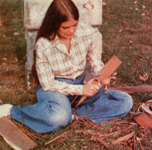
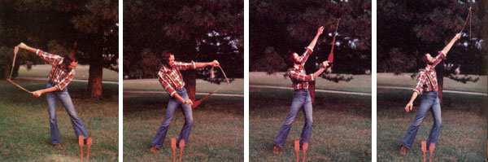

Robert Birkby describes a toy that can add a little excitementto your life.
Make and Fly a Shingle Rocket Back in the days whenthe Iowa plains were covered with prairie grass rather than corn,pioneer children used to fling shingle rockets into the sky andthen run screaming around the countryside ... waitin' for themissiles to come a-whizzin' back down and stick in the footprintsthey'd just vacated.
My granddaddy (who was one of those rascals)taught me all the secrets of the pioneer projectiles.So-even if you've never touched a knife to wood in yourlife-get hold of a wooden shake and a half-hour of easywhittlin' time, and I'll tell you how to make yourself an"intercontinental ballistic shingle" ... and have askill to pass on to your grandkin.
CARVE IT OUT
Any kind of wooden shingle will do . . . as long as it'sthicker at one end than the other. The clerk at my locallumberyard gives me "seconds" (new shingles with flaws in them),and-when I see an old barn or shed being torn down-Iask the building's owner to let me salvage whatever rocketmaterial I can gather for myself. Also, when you split your owncedar roofing shakes, watch for those that diminish in thicknessfrom one end to the other. (Since they're heavier than thestorebought variety, homemade shingles make the best flyers ofall!)
Once you have your "raw material" in hand, use a sharpknife to carve it into an arrow shape, making sure the pointis at the thick end of the shake, and the finis at the thin end. The wooden "fletching" shouldtake up one-third of the total length of the toy and be about3-1/2" wide .. while the shaft-which ought to be about aninch in width-will use up the remaining two-thirds.
Sinceshingle wood splits easily, I've found it's best to cut from theback toward the point of the missile. (That way, there's lessdanger of accidentally slicing off the fin.)
After your rockethas taken shape, find its "center of gravity" by balancing thehigh flyer horizontally on your finger. Then whittle a 3/8"-deepnotch at that "central" point, angling the cut about 45°toward the nose of the craft. Again, be careful not to split thewood.
MINUTES TO COUNTDOWN
Next, you'll need arocket launcher to blast your creation into the clouds. For thistask, I use a stick that's about two feet long and an inch thick.(If the wood is green-say, a good springy branch of ash oroak-it'll give the shingle more kick.) Then tie an 18" length ofstrong cord (3/16" nylon clothesline works pretty well) near oneend of the wand, and loop a tight overhand knot into the free endof the line.
Before the corn gets knee-high here in Iowa, we haveplenty of wide open fields for firing ranges, though any pastureor uncongested playground will do. But until you get the hang ofaiming your shots, it's wise to practice away from greenhouses,beehives, and the patch with that prize melon you plan to take(unperforated) to the county fair.
Make your finalpreparations for blastoff by grasping the launcher in one hand asif it were a fishing pole. Hold the rocket (with its point awayfrom you and the notch on top) in the other hand, and slide thecord across the notch until the knot is snugged up tight againstthe missile.
The launch itself involves a motion similar to thatof hurling a pailful of cool water over your own head on a hotJuly day. With your arms straight out, swing the rocket andlauncher back like that water bucket, then whip them forward andup in a smooth arc . . . letting go of the wooden arrow theinstant the launcher is directly over your head. A good throwwill sling a shingle missile two or three hundred feet straightup, where it'll hang for a moment . . . and then come blastingback to earth (ssswah-THUD!).
A LAST WORD OFWARNING
You can, of course, modify your own missiles bycreating different shapes, sizes, and weights ... but whateverthe configuration, make sure you're quick on your feet! "If youdon't make the point of the rocket too sharp, there's no realdanger," my granddaddy assured me, "but once that thing'sairborne, run like an Iowa tornado's about to drop down on you!'Course, that's the fun of the game . . . havin' a littleuncertainty hanging over your head. Gets the adrenalin pumpin'and makes you live longer."
And-if anyone needs proof ofhis claim-Granddaddy's been running loose under shinglerockets for nigh onto 83 years!
|
 |
 |
|